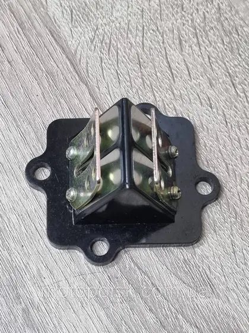

Yamaha
Оберіть вузол або введіть назву чи артикул.
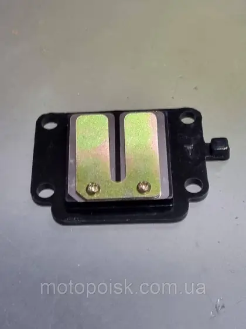
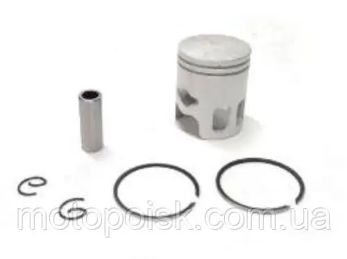
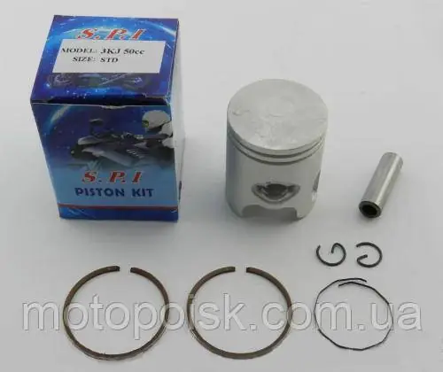
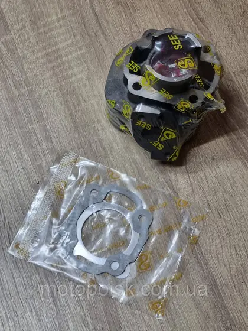
YM8776Поршнева в зборі/
В наявності
Поршнева в зборі/Циліндр у зборі/ЦПГ Ямаха Джог 3kj, д40 мм. SEE, Тайвань
В наявності1 605 ₴/комплект
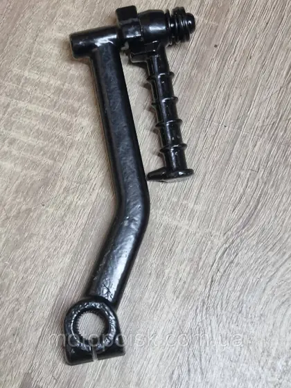
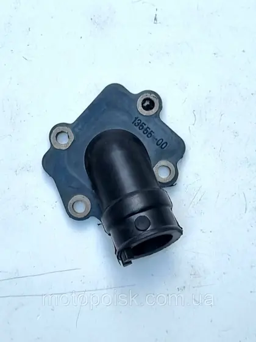
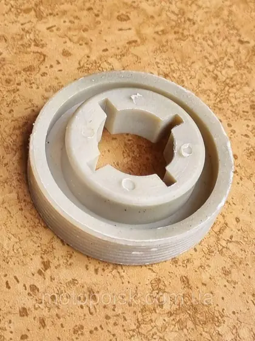
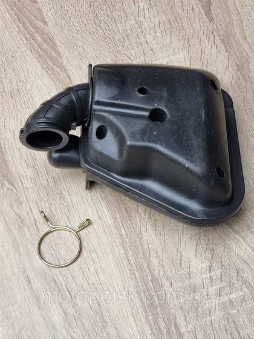
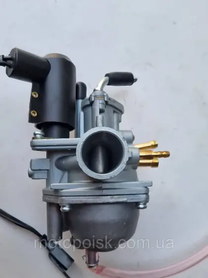
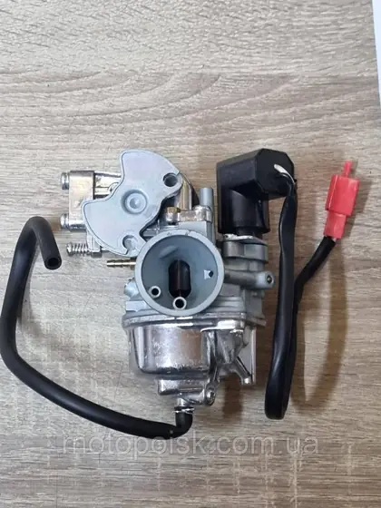
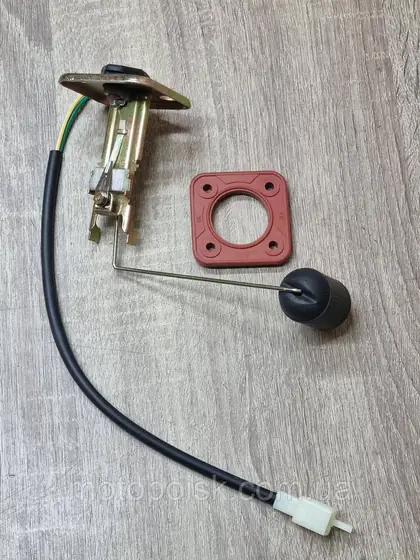
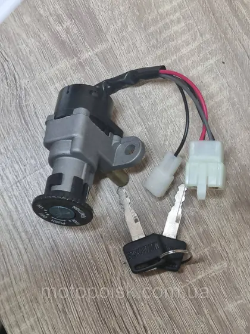
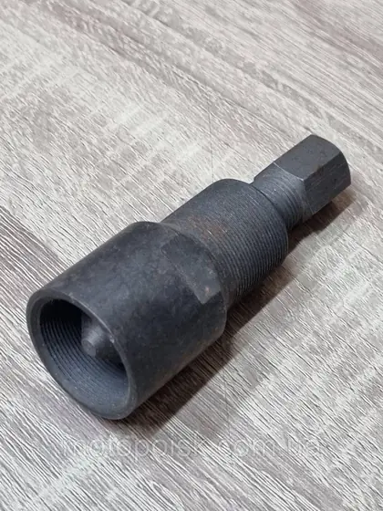
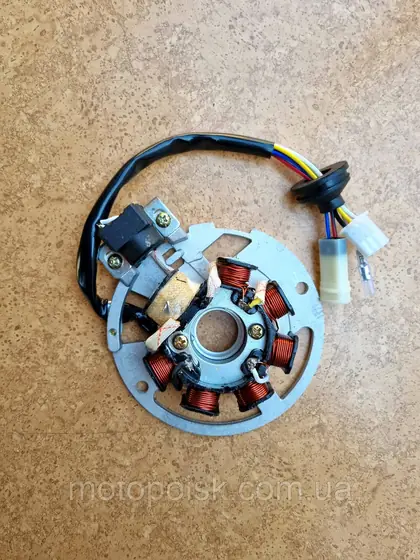
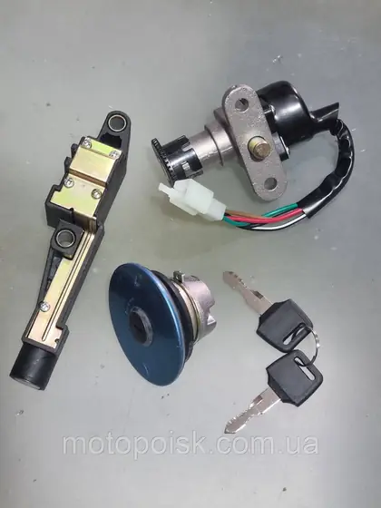
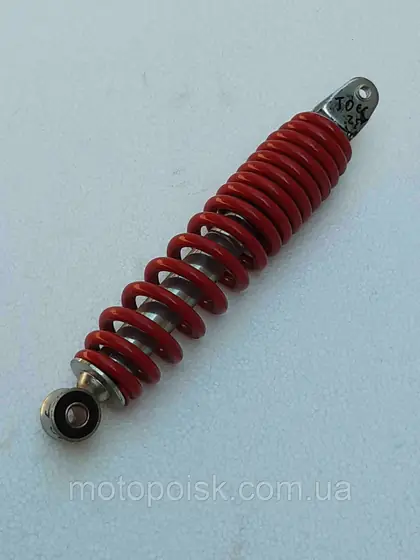
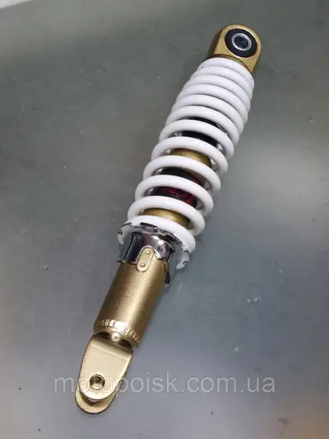
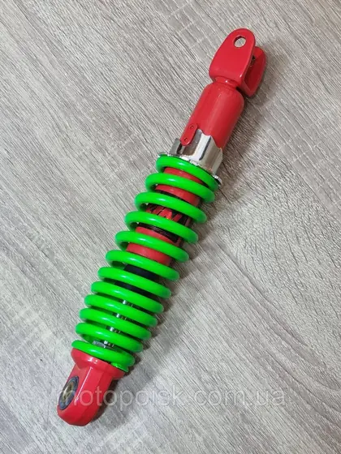
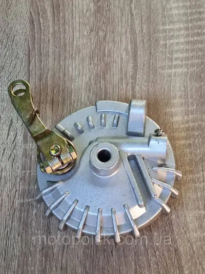
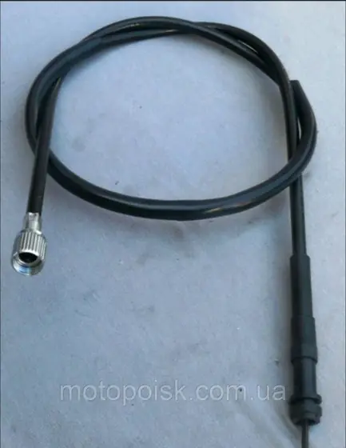
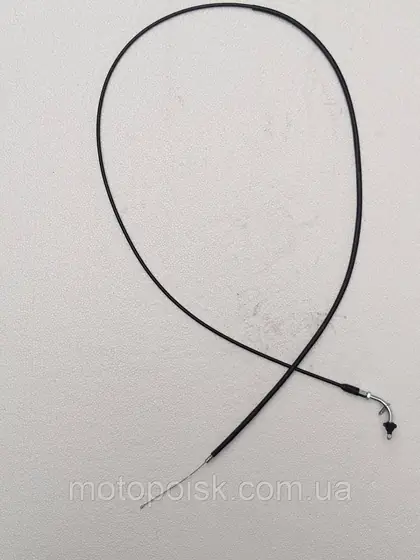
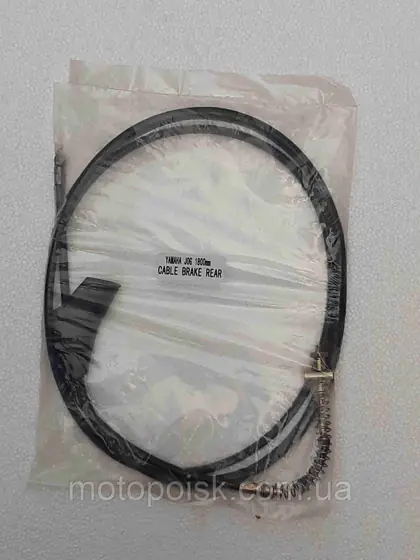
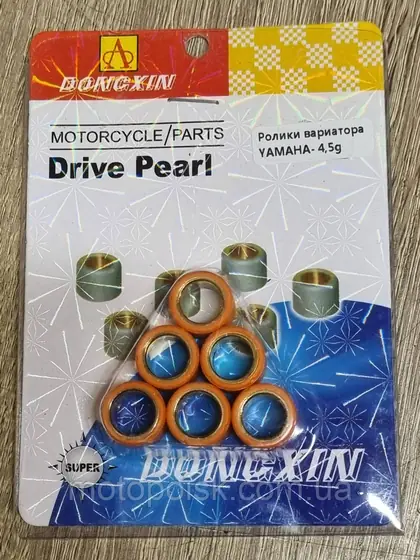
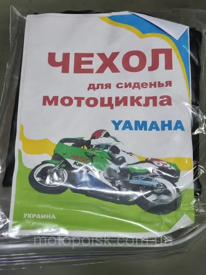
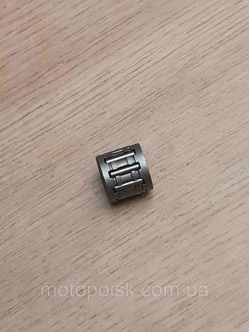
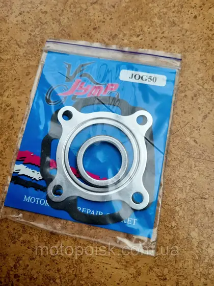
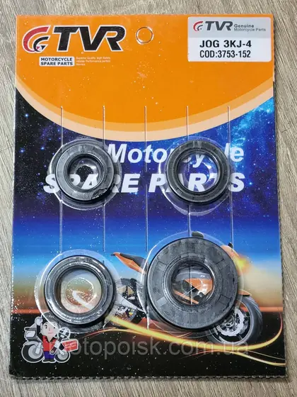
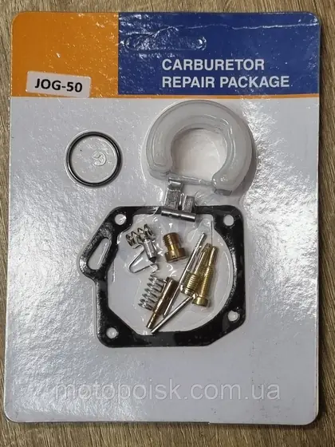
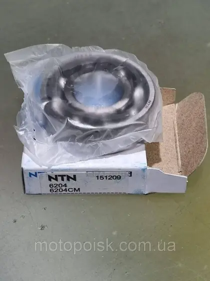
Нічого не знайшли у прев'ю. Зніміть фільтр або зателефонуйте: +380 (68) 316-07-03.